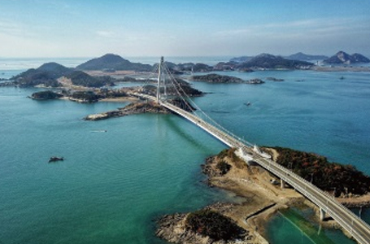

새만금
- Home
- 투자의 기회
- 외국인투자기업 중점유치 지역
- 새만금
산업입지에는 경제자유구역, 외국인투자지역 및 자유무역지역 등의 외국투자가를 지원하기 위한 지역이 있으며, 입지는 임대 또는 분양의 형태로 지원된다. 이러한 지역은 일정 요건 충족 시 입지지원 뿐만 아니라 조세감면이 적용되며 다른 법령에서 제한되는 사항에 대한 예외가 적용되는 경우도 있다.
새만금 개발 사업은 군산~부안을 연결하는 세계 최장의 방조제를 축조하여 간척토지와 호소를 조성하고 여기에 경제와 사업, 관광을 아우르면서 글로벌 자유무역과 경제협력의 중심지를 건설하는 국책사업
새만금 사업 개요
대한민국의 미래를 책임질 세계적 규모의 간척사업
-
위치전북 군산시, 김제시, 부안군 일원
-
사업규모면적 409㎦(용지 291㎦, 호소 118㎦) 세계 최장 방조제 33.9㎞
-
사업비22.2조원(국비 10.9, 지방비 0.9, 민자 10.3) 용지조성 10.9, 기반시설 6.6, 수질개선 2.9, 기타 1.8 18년까지 6.5조원 투자
-
예상인구개발완료 시 총 유발인구 75.9만명, 새만금 사업지역 내 29만명 수용 계획
- 
새만금 사업 비전
새로운 문명을 여는 도시, 새만금(아리울)
상호번영과 공동문제 해결을 위한 국가간 · 산업간 협력
- 초국적 경제협력 특구조성 한중일 등이 협력하는 국가간 경제 공동체 형성
- 글로벌 정주·교류 거점도시 세계적 정주여건을 갖춘 명품도시 다문화를 포용하는 문화 융합도시
- 수요자 맞춤형 계획도시 투자자와 기업의 수요를 유연하게 반영하는 도시
- 활력있는 녹색 수변도시 인간과 자연이 어울린 친환경도시 지속가능한 첨단 농업 녹색도시
- 탈규제&인센티브 특화도시 맞춤형 인센티브와 탈규제의 시범도시

새만금의 경쟁력
동북아 경제 중심지 조성을 위해 중앙행정기관이 전담하는 유일한 국가사업

-
국가차원의 선도적 투자 및 지원
- 공공주도 선도사업 추진으로 속도감 있고 정부의 전폭적인 지지를 얻는 사업
- 매립사업 및 인프라 확충을 전담하는 새만금 개발공사 설립
-
국내 유일 한중산업혁력단지 지정
- 정기적인 한중 산업협력단지 협력교류회 개최
- 상호간 경제 발전방안 논의 및 적극적인 투자유치 진행중
- 수입 원재료를 가공해 수출할 경우 관세 면제
-
국내 타 특구 대비 유연한 규제
- 수입물품 보관 기간 무제한 및 다양한 세제혜택
- 국내외 투자기업에게 장기임대용지(50년+50년)제공
- 추천서를 통한 비자(C-3) 발급관련 절차 대폭 간소화
-
전기차 관련 군산형 일자리 모델 구성
- 전기차 클로스터를 조성한 뒤 22년까지 총 17만 7,000대 생산예정 4,122억 4원 투자, 1,902명 고용창출
- 참여기업 : 명신, 새만금 컨소시엄, 에디슨 모터스, 대창 모터스, MPS코리아 등 중견기업 4개사와 부품업체 5개사
-
군산 강소연구개발 특구 유치
- 새만금 산업단지와 군산국가산업단지 배후지에 군산대와 자동차융합기술원을 비롯 지역 6개 연구지원기관이 참여해 연구개발특구 조성
-
새만금 신교통특구 조성
- 새만금 지역내 자율주행 자동차, 드론, 위그선 등 육해공 모빌리티와 관련된 4차 산업혁명의 핵심기술들을 테스트하고 상용화 할 수 있는 특구조성

새만금 토지이용계획과 주요 사업현황
-
미래차 클러스터(산업연구용지)
- 새만금산업단지 내 3.4㎦ 미래차 클러스터 조성(10개 기관 협약)
- 친환경 미래차 강소연구특구 지정, 상용차 주행 테스트베드 등 인프라 구축
-
재생에너지 사업
- 사업기간 : 2018~2025년
- 사업주체 : 새만금개발청, 새만금개발공사, 군산시
- 사업내용 : 수상태양광 2.1GW, 육상태양광 0.3GW, 연료전지 0.1GW, 풍력 0.1 GW
-
친환경 스마트 수변도시(국제협력용지)
- 사업내용 : 친환경 스마트 수변도시 개발(국제비즈니스, 컨벤션, 호텔, 리조트, 아트센터, 주거 등 기능)
- 면적 : 6.6㎦/사업시행자 : 새만금 개발공사/사업기간 : 2018~2024년
-
관광레저 사업, 잼버리 대회(관광·레저용지)
- 사업부지 : 고군산군도, 신시야미지구, 관광레저 1,2 지구
- 세계 스카우트 잼버리 대회 : 2023년 개최
- 관광레저 1지구 8.9 ㎦ 개발